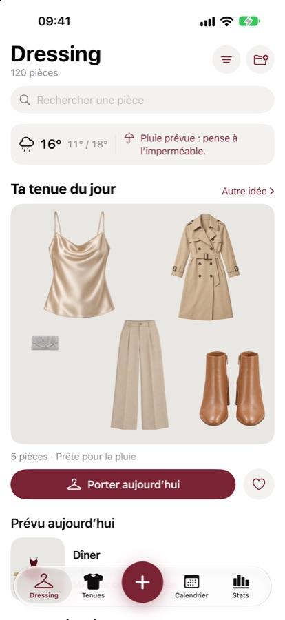
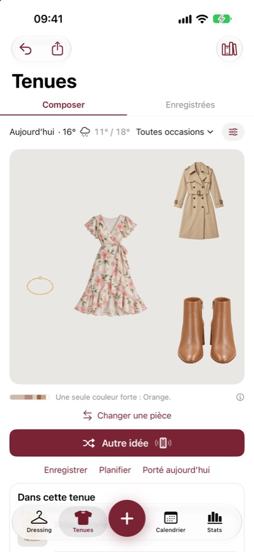
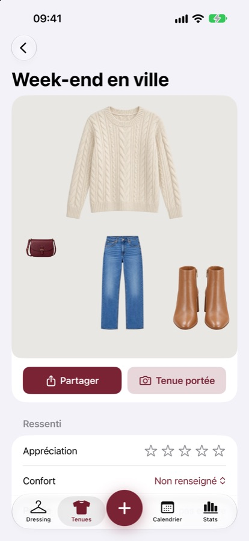
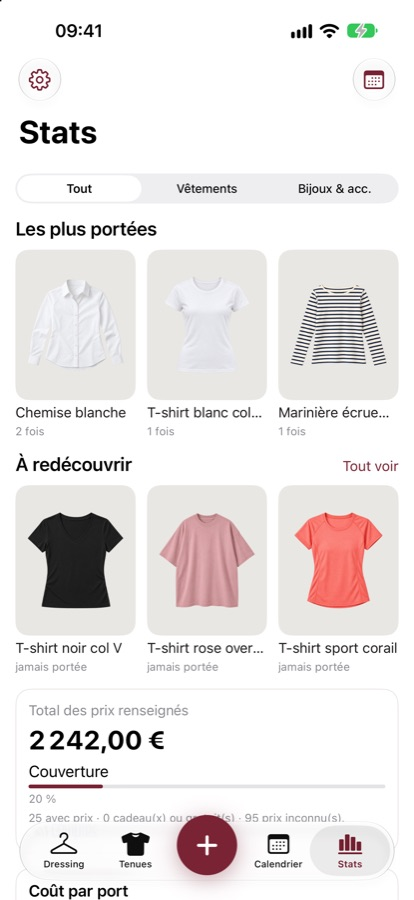

Ton dressing dans ton iPhone.
Photographie tes vêtements et tes bijoux, compose des tenues selon la météo, planifie ta semaine et redécouvre ce que tu ne portes plus.
Bientôt sur l’App Store



Ce que fait InspyDressing
Tes pièces en photo
Détourage automatique, couleurs reconnues, appareil photo guidé. Ou importe un vêtement acheté en ligne depuis la page de la boutique.
Des tenues selon la météo
Une tenue du jour adaptée au temps qu’il fait, des options (couleurs, bijoux, chapeau, sac) et une nouvelle idée en secouant l’iPhone.
Calendrier et ressenti
Planifie tes tenues avec la météo prévue, note ce que tu as porté et ce que tu en as pensé, ajoute une photo de toi.
Stats et redécouvertes
Pièces les plus portées, coût par port, vêtements oubliés à remettre en avant, aide à la revente.
Entretien et rangement
Composition et symboles d’entretien de chaque pièce, lieux de rangement (commode, penderie, grenier…).
Privé par défaut
Pas de compte, pas de publicité, pas de suivi. Tes photos et tes données restent sur ton iPhone.